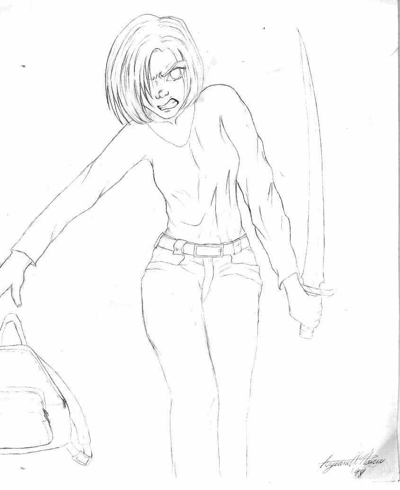
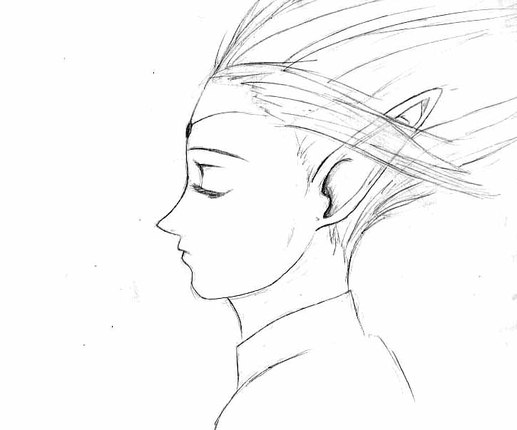
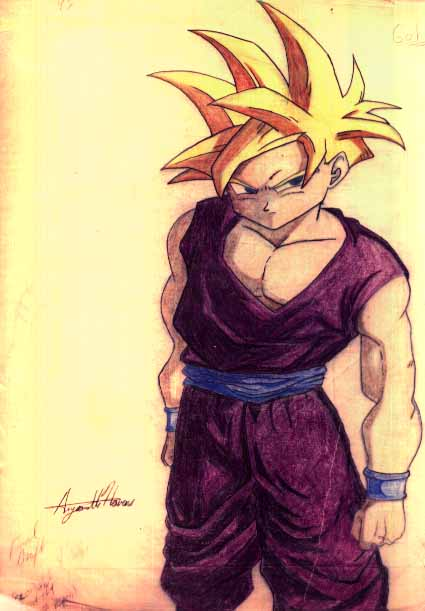

Gallery
Welcome to my portoflio section of my website
| Thumbnail | Title | Description |
|---|---|---|
 |
Angry Buffy the Vampire Slayer | Sketch for a contest. |
 |
Deelit from Lodoss Wars | Sketched this from looking a paused video on TV...with a VCR. |
 |
Colored sketch of Gohan | This was the first time I used onion skin to refine the drawing which I later colored. The onion skin was introduced by my mother who was an artist as well. |
 |
Pen drawing of Gohan | This was my attempt to ink over my sketch of Gohan. You would see the sketch version in the homepage. |